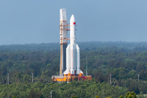
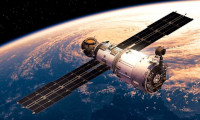

A NASA foi criada em 29 de julho de 1958, substituindo seu antecessor, do Comitê Consultivo Nacional para a Aeronáutica (em inglês: National Advisory Committee for Aeronautics — NACA). A NASA foi a responsável pelo envio do homem à Lua (veja projeto Apollo) e por diversos outros programas de pesquisa no espaço. 🚀

NASA significa Administração Nacional do Espaço e da Aeronáutica, (National Aeronautics and Space Administration) e é a Agência Espacial Americana, que responde pela pesquisa, e desenvolvimento de tecnologias e programas de exploração espacial e tem como missão incrementar o futuro na pesquisa, a descoberta e a
Em 10 de julho de 1962, a Nasa lançou o Telstar I, o satélite que permitiu a primeira transmissão ao vivo de imagens de televisão entre os Estados Unidos e a Europa. ... O primeiro satélite que os Estados Unidos colocaram no espaço de forma eficiente chamou-se Score e foi lançado em dezembro de 1958.
